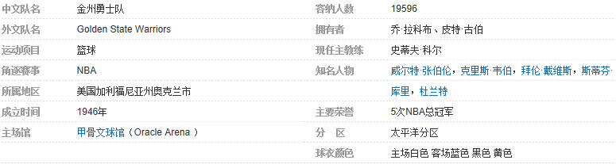

|
 | |||||||||||||||||||||||||||||||||||||||||||||||||||||||||||||||||||||||||||||||||||||||||||||||||||||||||||||||||||||||||||||||||||||||||||||||||||||||||||||||||||||||||||||||||||||||||||||||||||||||||||||||||||||||||||||||||||||||||||||||||||||||||||||||||||||||||||||||||||||||||||||||||||||||||||||||||||||||||||||||||||||||
目录 |
||||||||||||||||||||||||||||||||||||||||||||||||||||||||||||||||||||||||||||||||||||||||||||||||||||||||||||||||||||||||||||||||||||||||||||||||||||||||||||||||||||||||||||||||||||||||||||||||||||||||||||||||||||||||||||||||||||||||||||||||||||||||||||||||||||||||||||||||||||||||||||||||||||||||||||||||||||||||||||||||||||||||
金州勇士队队名演变
金州勇士队历史沿革1946年至1949年
1946-47赛季，来自肯塔基大学，身高6尺5的乔·福尔克斯以23.2分的场均得分摘取了的得分王头衔，比联盟的二号得分手鲍勃·费里克（Bob Feerick）多出了6.4分之多（当时的比赛得分都很低，作为冠军勇士全队的场均得分也只有68.6分）。
 费城武士队队标（1946-1962） 费城武士队队标（1946-1962） 1947-48赛季勇士赢得东区冠军，常规战绩27-21，但在总决赛中输给了巴尔的摩子弹队。福尔克斯以22.1的场均得分再次领衔联盟，但得分王的头衔（以总得分算）却归于芝加哥的马克斯·扎斯洛夫斯基（1007分，场均21.0分）。费城的另一个突出人物是霍威·达拉末，场均得12.2分（全队第二）和2.5助攻（联盟第一）。
1948-49赛季，福尔克斯依然纵横联盟，场均砍下26.0分，包括在对阵印第安纳波利斯时单场拿下63分。然而，由于赛季前有4支国家篮球联盟（NBL）的球队跳槽到了BAA，一些新的天才球员也由此登陆了——包括乔治·迈肯，这位明尼阿波利斯湖人的能源之塔暴风般地杀进了BAA并以1698的总得分（场均28.3分）掠走了当年的得分王头衔。勇士的埃德·萨多斯基，以15.3分的场均得分排在联盟的第5位。尽管拥有两名顶尖射手，费城勇士的常规战绩仍只有28胜32负，并在季后赛首轮中败给了华盛顿国会队。
1949年至1952年
1949-50赛季，勇士队加入NBA的首个赛季。在BAA的竞争对手NBL解散之后，6支幸存下来的球队加入了BAA，组成了有17支球队的新联盟NBA。一些BAA的球队并不愿和诸如希博伊根（Sheboygan），三城（Tri-Cities），安德森（Anderson）和滑铁卢（Waterloo）等毫无名气的球队组成联盟，结果就导致了这个赛季的赛程和季后赛体系的混乱。
 勇士后场双枪(2张)
1950-51赛季，勇士成绩反弹以40胜26负的成绩成为东区冠军。随着乔·福尔克斯找回火力（场均18.7分）和保罗·阿里金每场9.8篮板的稳定贡献，以及安迪·菲利普联盟最佳的场均6.3助攻，勇士队最终在分区中领先于波士顿凯尔特人队。但勇士队杀进了季后赛后，被锡拉丘兹民族队3-0击败。
1951-52赛季，勇士队的战绩排在联盟第四位，而锡拉丘兹民族队排在第一。在季后赛中，勇士在首轮被锡拉丘兹民族队击败。队中保罗·阿里金为勇士队每场献上25.4分，超过乔治·麦肯成为联盟的得分王。安迪·菲利普在赛季末被选进NBA最佳第二阵容。
1952年至1956年
1952-53赛季，勇士队的常规赛成绩跌到联盟底部——12胜57负，落后第1名34个半胜场之多。但队中依旧存在亮点之处：尼尔·约翰斯顿以场均22.3分的得分在联盟中排名第1。福尔克斯和丹尼尔·芬恩也各自有场均11.9分。
1952-53赛季，是勇士队三年沦落的第一年。在垫底联盟之后，勇士队在1953-54赛季并无多少起色，在东区排名第4，以29胜43负被拒于季后赛门外。尼尔·约翰斯顿仍以24.4分再夺联盟得分王。而勇士队的老板们制定了两条职业篮球的规则：24秒进攻限制和球队犯规罚球。这些改变使得比赛犯规减少，节奏更快，从而也更富有激情。
1954-55赛季，勇士队在常规赛中继续在东区排名第4，落后NBA冠军球队锡拉丘兹民族队10个胜场。勇士队在根本上就是一支两人球队，尼尔·约翰斯顿（1631分，场均22.7分）和保罗·阿里津（1512分，场均21.0）分列联盟得分榜第1、2名。
1955-56赛季，球队的命运开始急剧转变。埃迪·戈特里布将教练一职让与前球队后卫乔治·塞内斯基。随着联盟的平均得分迅速飙至99分每场，勇士队快速反弹，以12胜4负开局并最终在东区排名第一。在季后赛中勇士也所向披靡，夺下了球队的第2个总冠军[8] 。勇士队在1955-56赛季NBA决赛中以4-1击败韦恩堡活塞队。队中的保罗·阿里金（场均24.2分）和尼尔·约翰斯顿（场均22.1分）各自在得分榜上排名第2和第3。治（Jack George）代表勇士参加了1956年的全明星赛。
1956年至1961年
1956-57赛季，勇士队将王冠拱手相让与波士顿凯尔特人，那个赛季在波士顿凯尔特人队有一个全面的天才球员名叫比尔·拉塞尔。1957-58赛季，勇士队的战绩在东区排名第三并在半决赛中以3-0击败锡拉丘兹民族队，但在分区决赛中，勇士队4-1再次输给了凯尔特人。
 季后赛勇士主场黄色的海洋 季后赛勇士主场黄色的海洋 1959-60赛季，威尔特·张伯伦和保罗·阿里金，汤姆·戈拉以及盖伊·罗杰斯一起，带领勇士拿到49胜26负的成绩，在东区位于凯尔特人之后名列第二。勇士在季后赛中击败锡拉丘兹，但在东区决赛中以4-2不敌凯尔特人。
1960-61赛季，威尔特·张伯伦再次成为联盟的得分王（场均38.4分），另外还摘下了联盟最高的27.2个篮板。尽管张伯伦极其辉煌，勇士队以11场的弱势不敌敌凯尔特人成为联盟常规赛第二名。在季后赛中，勇士队在东区半决赛中被锡拉丘兹民族队横扫出局。
1961年至1965年
1961-62赛季，威尔特·张伯伦创下NBA纪录的场均50.4分并掠下25.7个篮板。在1962年1月，还创下了8天内有3场比赛得62分的纪录。在宾夕法尼亚的赫尔谢对阵纽约时，张伯伦写下了联盟史上唯一一场的单人得分100纪录，63投36中并在罚球线上32罚28中1961-62赛季，张伯伦还创造总得分（4029分）超过总上场时间（3882分钟）的纪录。在这个赛季，勇士队依然无法扳倒凯尔特人，以落后11场结束赛季（连续3个赛季落后凯尔特人至少10个胜场）。勇士队在东区半决赛中击败锡拉丘兹民族队，但在东区决赛中3-4惜败给波士顿凯尔特人队，无缘总决赛。
1961-62赛季，勇士队将自己的主场驻地迁往美国西部。1962-63赛季，勇士队以Cow Palace作为主场，以鲍勃·费里克作为教练。队中的张伯伦仍是内线怪物，场均有44.8分和24.3篮板进帐并连续四个赛季在这两项主要技术统计上统率联盟。然而，球队竟然无法达到5成的胜率并被挡在了西部的季后赛门外。
1963-64赛季，球队在亚历克斯·汉纳的执教下，和张伯伦、汤姆·梅歇里、韦恩·海塔沃、盖伊·罗杰斯，艾尔·阿特尔斯、加里·菲利普斯和内特·瑟蒙德等人的带领下，以48胜32负的成绩排在西区第一。张伯伦以36.9分连续第五个赛季夺下联盟得分王。在季后赛中，勇士在7场制胜的系列赛中力压圣路易斯鹰取得西部冠军，但在总决赛中再次不敌凯尔特人，无缘联盟总冠军。
1964-65赛季，勇士在3年之内的第二个低谷。1962-63赛季，球队的胜率只有38.8%，1963-64赛季，勇士队却杀进了总决赛；1964-65赛季，勇士队的战绩居然只有17胜63负，落后第1名32个胜场之多在联盟中垫底。
1965年至1971年
1965-66赛季，张
 张伯伦单场独得100分 张伯伦单场独得100分 1966-67赛季，勇士队继续攀升，以44胜37负的成绩排在西部第1。里克·巴里成长为联盟中的得分王（35.6分），霸占了张伯伦连续坐了7个赛季的宝座。然而张伯伦却带领费城76人队在1966-67赛季总决赛中击败勇士队，而勇士队再次与总冠军擦身而过。但是里克·巴里除了得分王的头衔之外，还获得1967年全明星赛MVP，在那次全明星赛中得到了38分；以及入选NBA第一阵容。
1967-68赛季，里克·巴里离开勇士队去ABA联盟打球。勇士队在球衣上印着“城市”（The City）字样，并在前面印上金门大桥的图案。虽然没有巴里的得分，但鲁迪·拉鲁索（21.8分），内特·瑟蒙德（20.5分），杰夫·穆林斯（18.9分），以及弗雷德·海策尔（19.0分）组成了令对手头疼的四人组，帮助勇士填补了失去巴里的空白。勇士获得43胜39负的成绩，排名西区第3。在西区的半决赛中，勇士队以4-2淘汰圣路易斯鹰队。但在决赛中被洛杉矶湖人队直落4场横扫出局。
1968-69赛季，勇士队取得41胜41负的成绩并进入了季后赛。内特·瑟蒙德以每场19.7个篮板排在联盟第2，并进入了NBA防守第一阵容。在季后赛中，球队在分区半决赛中以2-4再次输给湖人队。
1969-70赛季，球队最终只取得30胜52负的成绩，排在西区第6。杰夫·穆林斯以22.1分排在联盟第12位。球队头号篮板手和防守家的内特·瑟蒙德缺席39场比赛，但场均能得到21.9分。
1970-71赛季，在NBA重新分区后，勇士队被分至太平洋赛区，以41胜41负的成绩排在分区第2名。勇士队在新的西部半决赛中遭遇了密尔沃基雄鹿队，结果被5场淘汰出局。该赛季，杰夫·穆林斯场均得到20.8分，内特·瑟蒙德每场也有20.0分入帐并再次进入NBA防守第一队。
1971年至1975年
1971-72赛季，球队陷入麻烦之中，其入座率和球队收益很低，因此球队离开港口城市旧金山来到了奥克兰。为了吸引更多的球迷，球队改名为金州勇士队，甚至还在圣迭哥打了几场球。1971-72赛季，拉塞尔和穆林斯（21.5分）以及瑟蒙德（21.4分）并列为勇士的三大得分手。得分三人组用足够的分数把勇士队带到51胜31负，但这个成绩依然落后湖人队18场之多。在季后赛中，勇士队在西部半决赛以4-1输给密尔沃基雄鹿队。
1972-73赛季，里克·巴里根据法院的裁决回到了勇士队。回归后给勇士带来强大的先发阵容：巴里、穆林斯、瑟蒙德、拉塞尔以及场均得分11.8分的后卫，来自俄勒冈的吉姆·巴内特。在这个赛季，勇士队取得47胜35负的战绩，排名太平洋区第二。在季后赛中，勇士队击败连续第3年碰到雄鹿队，但西部决赛中1-4不敌洛杉矶湖人队。
 前勇士球星克里斯·穆林 前勇士球星克里斯·穆林 1974-75赛季，勇士拆散重组，引入了全新的比赛风格。转变的结果震惊整个联盟，勇士队以48-34的成绩成为太平洋区的冠军，在该赛季的总决赛中横扫华盛顿子弹队赢得了总冠军[8] 。队中的巴里场均献上30.6分（联盟第2），同时还在罚球命中率上领衔联盟（90.4%），6.2场均助攻也排到了联盟第6的位置。威尔克斯也有场均14.2分和8.2篮板的贡献，成为了该赛季的NBA最佳新秀。
1975年至1979年
1975-76赛季，勇士队获得联盟常规赛的最佳战绩：59胜23负，并在西部半决赛中以4-2摧毁底特律活塞队。但在西部决赛中输给凤凰城太阳队。在这个赛季，球队中巴里再次入选NBA第1阵容，成为联盟最好的罚球手（92.3%），并在助攻方面以6.1个排名第5。威尔克斯场均17.8分，而令人激动的新秀古斯·威廉姆斯（Gus Williams）也有11.7分的进帐。
1976-77赛季，ABA被NBA吞并，给NBA联盟带来新的球队和球星。而勇士队却在该赛季缺兵少将，无力争夺冠军。勇士队在1976年的选秀中以第8顺位选中中锋罗伯特·帕里什。里克·巴里，菲尔·史密斯，贾马尔·威尔克斯和古斯·威廉姆斯在进攻上提供火力，而帕里什和克利福德·雷而组成内线防守铁墙。勇士以46胜36负的成绩落后湖人和开拓者，排名太平洋区第3。季后赛，勇士在3场2胜的首轮轻取底特律活塞，但在半决赛中，和湖人战满7场后遗憾落败出局。
1977-78赛季，勇士队中开始分崩离析，贾马尔·威尔克斯成为自由球员并加盟湖人队，古斯·威廉姆斯以同样的方式加入西雅图。同时勇士队签下了获得NBA防守二队的老兵E·C·科尔曼，最终勇士队以43胜39负的成绩结束赛季，连续7个赛季胜率超过50%，但勇士队在实力强劲的太平洋区中垫底，并以一个胜场之差失去季后赛资格。赛季结束后，里克·巴里以自由人的身份和休斯敦火箭队签约，成为两年来第3个离开勇士的头号得分手。
1978-79赛季，勇士队再没充足的火力来克服失利。菲尔·史密斯场均得到19.9分，罗伯特·帕里什继续有进步，为勇士队场均添上17.2分和12.1个篮板。罗伯特·帕里什在该赛季还创下破队史纪录的217个盖帽。约翰·卢卡斯，一位从火箭交换得来的火爆控卫，以场均9.3助攻排在联盟第2。三年级生卢卡斯、帕里什、新秀帕维斯·肖特和韦恩·库珀使得勇士成为联盟中最年轻的队伍，平均年龄24.3岁，球龄2.3年。年轻以及缺乏经验，使得勇士队的胜率跌破50.0%，38胜44负的成绩再次在太平洋区垫底。
1978-79赛季，拉开了勇士队接下来8年中7次胜率低于50%的序幕。勇士队在1979-80赛季崩溃，最终只取得了24胜58负的成绩，并列联盟倒数第2。约翰·卢卡斯以场均7.5助攻排在联盟第5，罗伯特·帕里什以10.9篮板排在第7。跟腱受伤的菲尔·史密斯缺席了31场比赛，甚至教练艾尔·阿特尔斯也在训练中也同样拉伤了跟腱并错失了最后21场比赛。而且勇士队在8场加时赛中竟然无一斩获，创下NBA的最衰纪录。
1980年至1982年
 勇士队中锋比德林斯 勇士队中锋比德林斯 1981-82赛季，和1980-81赛季有一个相似的结局。球队提高6个胜场，45胜37负的成绩排名太平洋区第4，但还是以一场之差未能进入季后赛。伯纳德·金（23.2分）和弗里（22.9分）分别排在联盟的第8和第9位，这也是勇士自1960-61赛季张伯伦和保罗·阿里津以来，首次有两人得分排进联盟前10。[11]
1982年至1986年
1982-83赛季，伯纳德·金抛下伤兵满营的勇士队，跳槽到纽约尼克斯队。这个赛季，勇士队的球员们因伤因病总共缺席了238场次，创下当时NBA的最高纪录。该赛季总共有多达19名的球员披过勇士球衣。球队磕磕撞撞地得到了30胜52负的成绩，排名太平洋区第5，落后湖人队28个胜场。贡献最多的是乔·巴里·卡罗尔，这是他职业生涯的最好一年（24.1得分，联盟第7）。帕维斯·肖特也有21.4分的进帐，连续4个赛季得分超过20。
 美丽的旧金山湾畔将建起新的主场 美丽的旧金山湾畔将建起新的主场 1984-85赛季，队中的乔·巴里·卡罗尔没有和勇士队签下合同，而选择去意大利打球。勇士队在压制对手命中率（53.6%）和得分（117.7分）方面均在联盟垫底，并以22胜60负的成绩和印第安纳步行者队并列联盟最差战绩。卡罗尔走后，拉里·史密斯一人承担了抢篮板的重任，以10.9的场均篮板排在联盟第6。
1985-86赛季，勇士队的成绩有所提升，但仍以30胜52负的成绩在太平洋区垫底。而乔·巴里·卡罗尔从欧洲赶回来，场均献上21.2分；而1984-85赛季得来的特里·蒂格尔，场均也有14.2分的进帐。帕维斯·肖特再次以25.5分领先全队，而潜力巨大的新秀克里斯·穆林出赛55场，每场也有14.0分的收入，并在罚球命中率上以.896排名联盟第2。
1986年至1990年
1986-87赛季，在1986年5月23日，吉姆·菲茨杰拉德和丹·芬南一起从弗兰克林·缪利手中买下勇士队，随即任命乔治·卡尔为主教练。在这个赛季，球队取得42胜40负的成绩并进入季后赛。在季后赛首轮，勇士落后犹他爵士队两场，随后直下三场翻盘，成为自1956年以来首支在5场3胜的比赛中落后两场翻盘的球队，但在西区半决赛中不敌洛杉矶湖人队。球队有一些不错的个人表现：乔·巴里·卡罗尔，平均每场21.2分；埃里克·弗洛伊德，以10.3助攻排名联盟第2。拉里·史密斯继续统治篮板，以11.5个排名第7。
1987-88赛季，球队从密尔沃基雄鹿队挖来唐·尼尔森当球队经理。尼尔森上任后立即进行了该赛季的最大交易，把卡罗尔和弗洛伊德送到休斯敦火箭队并换回了拉尔夫·桑普森和史蒂夫·哈里斯。但在这个赛季勇士队遭到伤病的重大袭击，球员缺席场次达到204场，球队先后使用了21个球员。在1988年3月23日，主帅卡尔辞职，由助理教练埃德·格雷高里顶替剩下的赛季。球队最终只有20胜62负的成绩。
1988-89赛季，勇士队取得43胜39负的成绩，比1987-88赛季有了23场的进步。勇士队在季后赛首轮中横扫犹他爵士队后，但在西部半决赛中5场负于凤凰城太阳队。
 勇士队(4张)
1990年
1990-91赛季，哈达威、里奇蒙德、穆林组成了“跑轰TMC”（Run TMC）三人组，平均每场砍下了72.5分，并带领勇士拿到了9年来最好的成绩44胜38负。穆林得分排名联盟第8（25.7分），里奇蒙德第10（23.9），哈达威第11（22.9），球队的场均得分也是23年来的最高（116.6分）。勇士队在季后赛首轮中3-1的总分让中西区冠军圣安东尼奥马刺队尝到苦果。但在西部半决赛中以1-4不敌湖人队。
1991-92赛季，勇士队把TMC组合拆散，虽然这使得球队的爆发力少一些，于是主帅尼尔森把里奇蒙德和莱斯·杰普森送到萨克拉门托国王队并换回了新秀比利·欧文斯和一个1995年的次轮秀。尽管送走备受球迷喜爱的里奇蒙德，这次交换仍然带来更好的结果。勇士队在这个赛季的得分领衔联盟（118.7分），55胜27负的战绩列在太平洋区第2。但在季后赛首轮中0-4不敌西雅图超音速队。而勇士队的主帅尼尔森则当选该赛季的NBA最佳教练。
1992-93赛季，勇士队被伤病所困扰，球队总共有14名球员因伤病缺席了总共312场比赛。队中四个主要的火枪手：穆林，哈达威，马休利奥尼斯，以及欧文斯——同时上场打球的时间只有2分37秒。最终勇士队只得到34胜48负的成绩并无缘季后赛。
1993-94赛季，勇士队失去蒂姆·哈达威和萨鲁纳斯·马休利奥尼斯，而克里斯·穆林在这个赛季也缺席前20场比赛。但主帅唐·尼尔森还能把球队带到50胜，比1992-93赛季多16场。球队中新加盟的克里斯·韦伯成为NBA历史上首位得到1000分，500篮板，250助攻，150盖帽和75抢断的新秀。以场均17.5分，9.1篮板的表现成为当年的NBA最佳新秀。拉特里尔·斯普雷维尔的上场时间排名联盟第1，场均21.0分。他首次在全明星赛中亮相并入选了NBA第1阵容。但该赛季勇士依然遭受伤病困扰，并在季后赛首轮中被菲尼克斯太阳队横扫。
1994年至1998年
 奥克兰球场夜景(2张)
1995-96赛季，在年轻球员拉特雷尔·斯普雷维尔和新秀乔·史密斯的帮助下，勇士队获得了多10场的胜场。但球队仍只有36胜46负的成绩，第3次无法进入季后赛。
1996-97赛季，勇士队因为奥克兰球馆全面翻新而把主场移到圣何塞，在这个临时主场艰难地拿到30胜52负的成绩。这个赛季是克里斯·穆林在勇士的最后一个赛季，这位前梦一队的成员是勇士队历史出场最多的球员。赛季在圣何塞结束后，主教练里克·阿德尔曼被辞退，他在勇士队的两个赛季里总成绩是66胜98负。代替里克·阿德尔曼的是PJ·卡莱西莫。
在1989年选秀会上，勇士队选中蒂姆·哈达威，其与克里斯·穆林、米奇·里奇蒙德成为勇士队新的基石，组成名震一时的TMC三巨头，然而在竞争强度极高的联盟中，勇士队始终只能是季后赛的陪衬球队。在1997-98赛季，勇士队还搬进新的场馆，球队更换了新的教练、队服和队标。
2000至2017年
 老尼尔森导演勇士队黑八 老尼尔森导演勇士队黑八 2010-11赛季开始前，唐·尼尔森向球队提交了辞呈，辞去了球队主教练的职位，然后基斯·斯马特接替了唐·尼尔森的位置。
2012-13赛季，2013年3月19日，勇士队在比赛中以93-72战胜黄蜂队，这是勇士队史上首次做到在连续两场客场比赛中都至少赢下对手20分[13] 。2013年4月6日，勇士队对阵太阳队的比赛中以109-107取胜，标志着两队这个赛季前三次交手，勇士队都取得胜利。自1976-77赛季以来，勇士队从没在常规赛中横扫过太阳，通过这场比赛终于完成任务[14] 。
2014-15赛季，在2014年12月17日勇士负灰熊的比赛中，勇士队（21-3）长达16场的连胜结束。克雷·汤普森拿下了22分，斯蒂芬·库里三分球10投仅1中，得19分、7个篮板和6次助攻[15] 。
最终勇士队在这个赛季以67胜15败排名西部联盟第一，拿下西部联盟第一种子。在季后赛中，先后战胜新奥尔良鹈鹕队（4-0）、孟菲斯灰熊队（4-2）、休斯敦火箭队（4-1），获得西部冠军晋级NBA决赛[16] ，与东部冠军克里夫兰骑士争夺NBA总冠军。[17] 2015年6月17日，NBA总决赛第六场，勇士客场以105-97再胜骑士，总比分4-2夺取总冠军。这是勇士队在1974-75赛季以来的第一个冠军，也是勇士所有球员个人职业生涯的第一个总冠军。安德烈·伊戈达拉获得总决赛MVP。
2015-16赛季，勇士队取得开季24连胜，创造历史最佳开局。同时，跨赛季的28连胜位列联盟历史第二位[18] 。此外，勇士队还取得了常规赛跨赛季主场54连胜，刷新历史记录[19] 。2016年4月4日，在对阵开拓者的比赛中，勇士单赛季三分命中数达到1000个，创NBA历史纪录[20] 。常规赛收官战中，勇士以125-104战胜灰熊，常规赛战绩最终定格在73胜9负，打破了公牛在1995-96赛季创下的纪录（72胜10负），成为NBA历史单赛季常规赛战绩最好的球队[4] 。季后赛中，勇士首轮4-1击败火箭、次轮4-1击败开拓者。西部决赛中，前四场比赛，勇士1-3落后雷霆，随后连赢三场实现逆转闯进总决赛。勇士成为NBA历史上第10支在1-3落后的情况下实现逆转的球队，也是第一次连续两年都有1-3落后的球队翻盘。[21]
2016-17赛季，2016年7月4日，凯文·杜兰特宣布加盟勇士。[22]
2017年6月13日，勇士回到主场和骑士展开总决赛第五场较量，最终他们以129-120击败对手，总比分4-1淘汰骑士，夺取2016-17赛季NBA总冠军。凯文·杜兰特在生涯第10个赛季终于收获生涯首冠。勇士以16胜1负的季后赛战绩，超越2000-01赛季的湖人（15胜1负），成为NBA历史上胜率最高的夺冠球队。同时，这是勇士最近三年里第2次夺冠，也是队史第5冠。[5] 湖人队 阵容
平均年龄：25岁 | 平均身高：2.04米 | 平均体重：100.1公斤
勇士队 阵容
平均年龄：28岁 | 平均身高：2.03米 | 平均体重：100.3公斤
退役球衣
|
||||||||||||||||||||||||||||||||||||||||||||||||||||||||||||||||||||||||||||||||||||||||||||||||||||||||||||||||||||||||||||||||||||||||||||||||||||||||||||||||||||||||||||||||||||||||||||||||||||||||||||||||||||||||||||||||||||||||||||||||||||||||||||||||||||||||||||||||||||||||||||||||||||||||||||||||||||||||||||||||||||||||